OCT 2021 – Actualidad
Universidad Nacional Mayor de San Marcos
Ingeniería de Software · 9° ciclo
OCT 2021 – Actualidad
Universidad Nacional Mayor de San Marcos
Ingeniería de Software · 9° ciclo
NOV 2021 – DIC 2021
Centro de Informática UNMSM
Herramientas informáticas y productividad
ENE 2023 – Actualidad
UNMSM – FLCH: Centro de Idiomas
Inglés (nivel intermedio)
MAR 2025 – JUL 2025
Red Peruana de Capacitación
Power BI, SQL Server y Python orientados a analítica
MAR 2025 – DIC 2025
Hamada Channel
Japonés (nivel básico)
Analista Funcional Jr. / Ingeniero de Requisitos
Colaboré en la diseño y planificación de PrimeTech Learning, una propuesta orientada al desarrollo y distribución de aplicaciones educativas web para estudiantes de primaria en Lima. Participé en la definición del modelo de negocio, análisis del mercado y diseño de una estrategia de contenido personalizado alineado al currículo escolar peruano. Este proyecto fortaleció mis habilidades en gestión de proyectos, planificación estratégica y trabajo en equipo con enfoque en innovación educativa.
Desarrollé un Sistema de monitoreo y predicción de consumo energético en alumbrado urbano, el cual esta basado en Arduino y Python para simular, analizar y predecir el consumo energético en luminarias urbanas. Implementé modelos de machine learning y un dashboard interactivo con Streamlit para visualizar datos en tiempo real, identificar anomalías y optimizar el consumo. El proyecto fortaleció mis habilidades en IoT, análisis de datos y visualización aplicada a la sostenibilidad.
En el marco de un proyecto de investigación, participé en el desarrollo de un sistema predictivo que estime la probabilidad de incumplimiento en préstamos personales, aplicando técnicas de minería de datos e IA. El trabajo incluyó el análisis y preprocesamiento de datos históricos, la implementación y comparación de algoritmos de aprendizaje automático, y la evaluación de desempeño utilizando métricas como precisión, sensibilidad y especificidad. Proyecto el cual me permitió afianzar mis conocimientos en ML, análisis de datos y su aplicación práctica en contexto financieros.
Participación en diversos proyectos orientados al fortalecimiento de competencias técnicas y organizacionales. Entre los más representativos se encuentran:
Participé en jornadas de auditoría de conocimientos matemáticos y uso de herramientas tecnológicas en estudiantes de secundaria, con el objetivo de detectar brechas de aprendizaje y brindar recomendaciones personalizadas. Esta experiencia fortaleció mis habilidades de comunicación, empatía y trabajo en equipo.
Integré un equipo multidisciplinario de estudiantes que brindó apoyo técnico y capacitación básica en TI y comunicación a docentes y alumnos de instituciones educativas públicas cercanas a la universidad. El proyecto implicó visitas presenciales, instalación y configuración de software, asesoramiento digital y acompañamiento pedagógico. Reforcé mi compromiso social, habilidades de colaboración, empatía y aplicación práctica del conocimiento técnico.
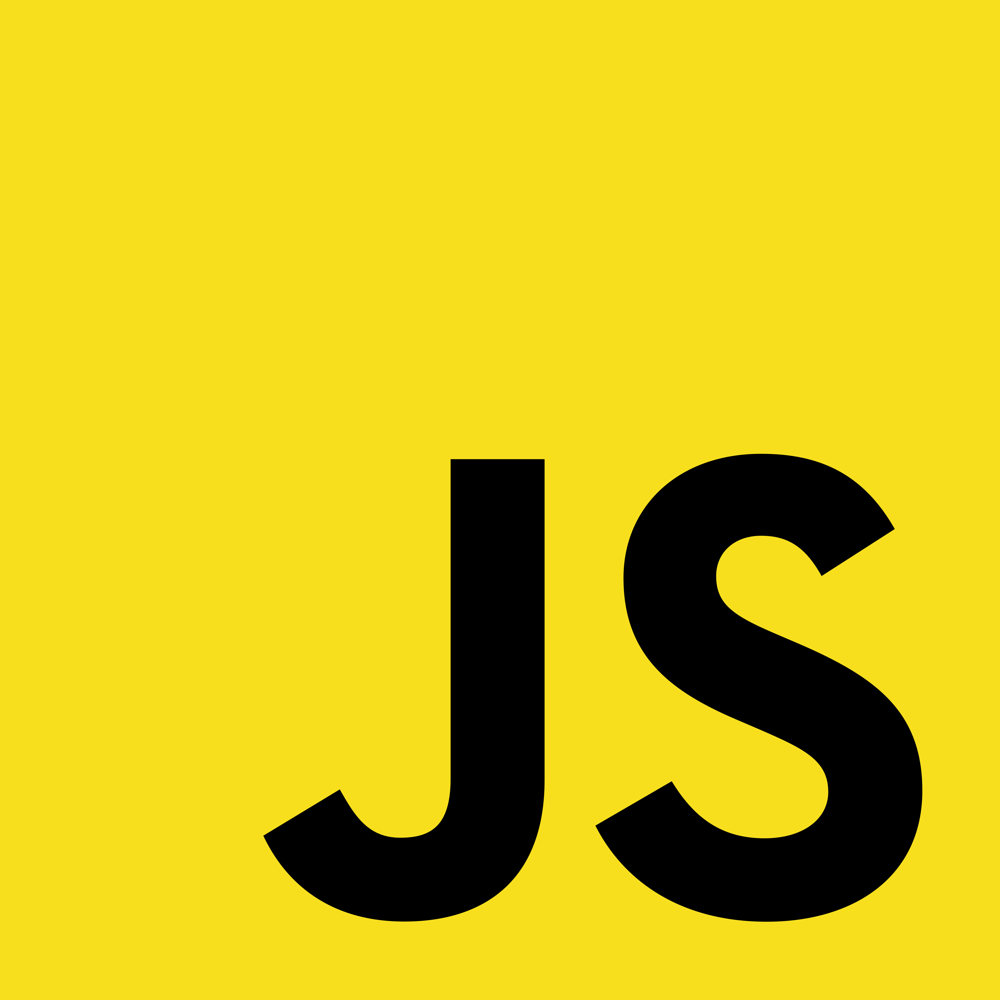
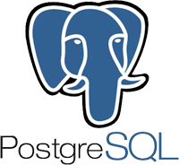
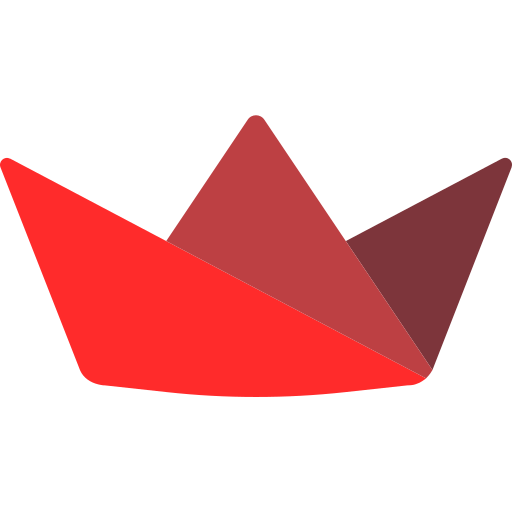
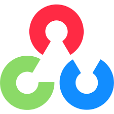
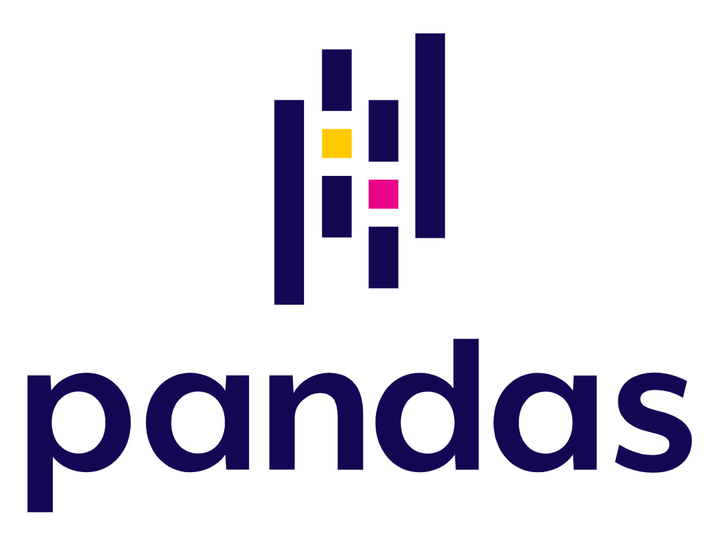
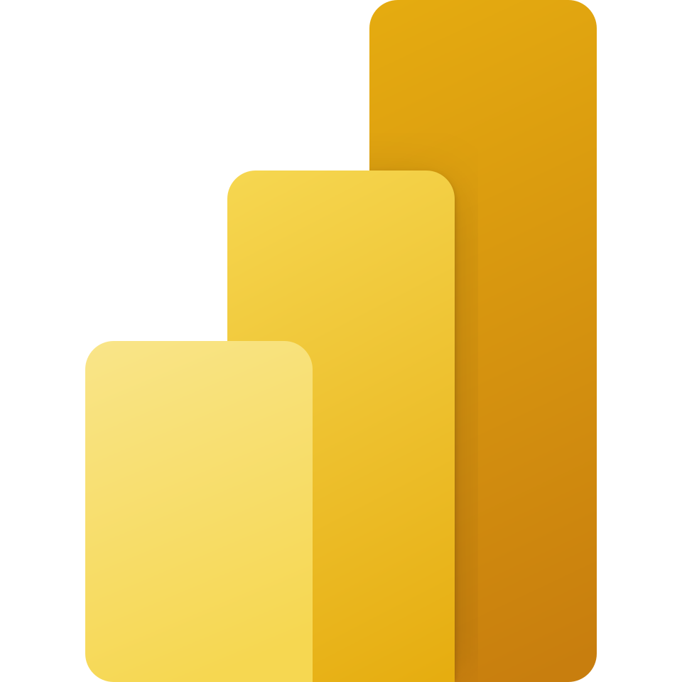
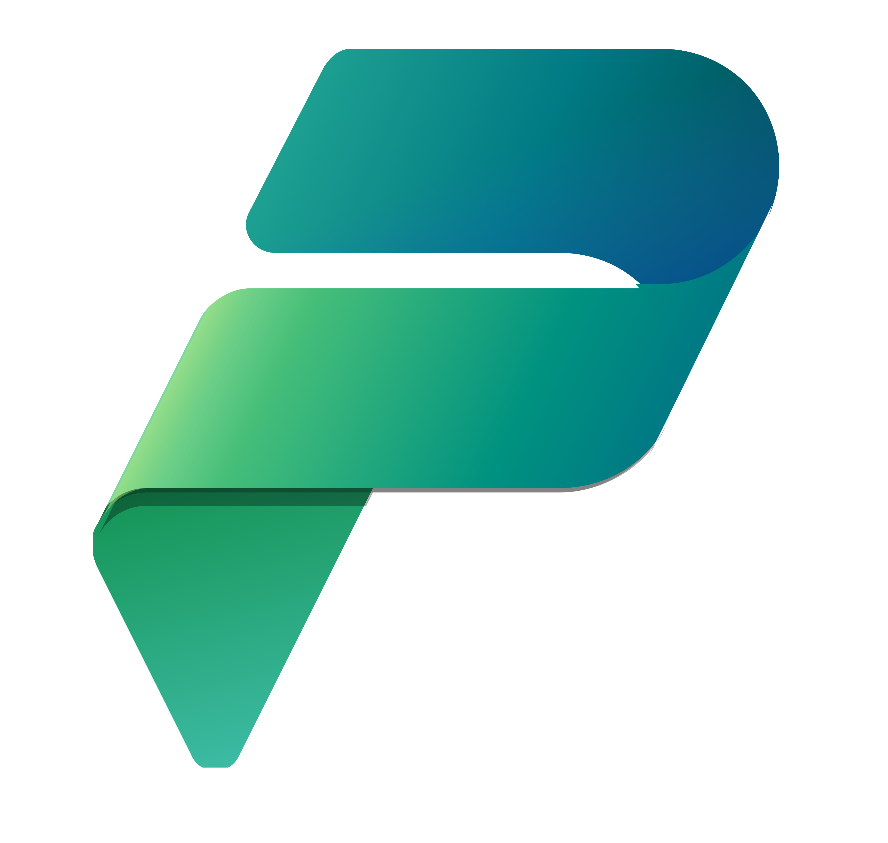
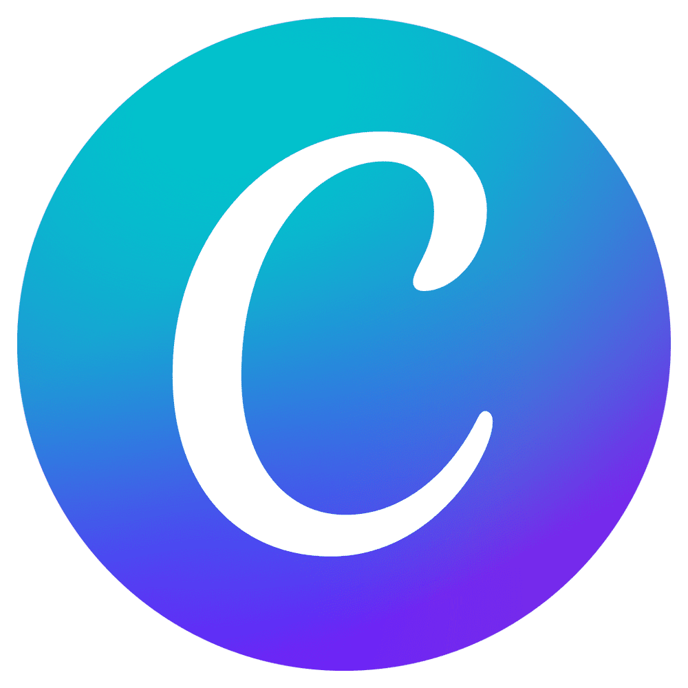
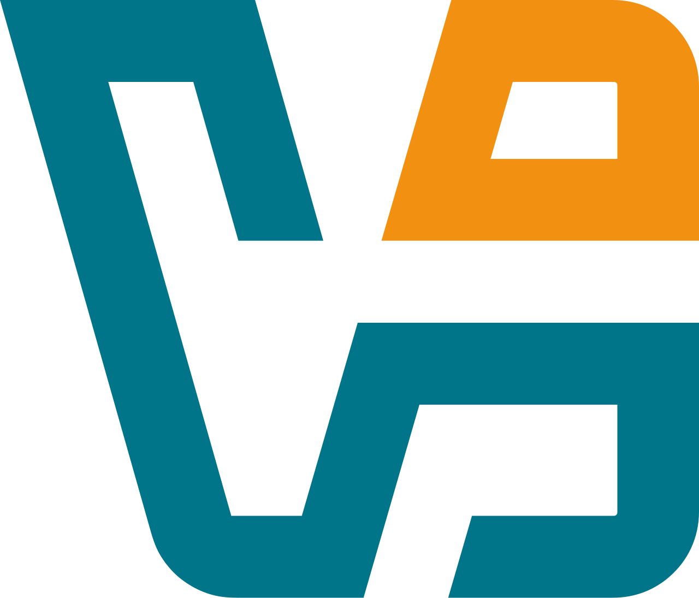
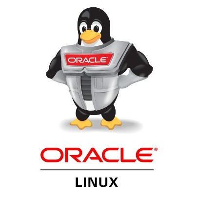
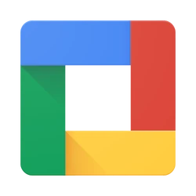